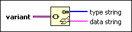

Variant To Flattened String Function
Owning Palette: Variant VIs and Functions
Requires: Base Development System
Converts variant data into a flattened string and an array of integers that represent the data type. You cannot flatten ActiveX variant data.

 Add to the block diagram Add to the block diagram |
 Find on the palette Find on the palette |